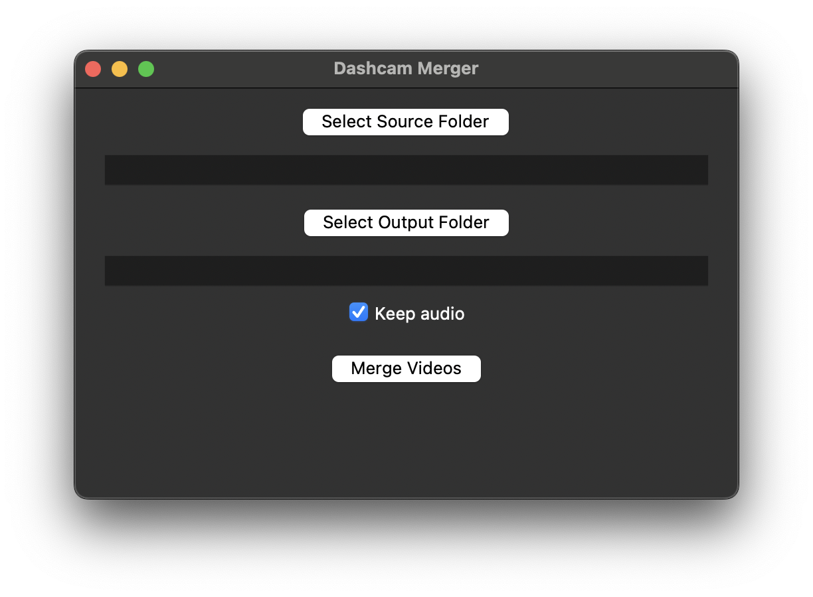

Dashcam Merger Tool
💡 The Challenge
Dashcam devices typically save footage in short, timestamped clips with limited or no audio. Editing these manually is tedious, especially for non-technical users who want to upload trip footage or compile incidents.
🛠️ The Solution
BenCode Studio developed a lightweight desktop tool that allows users to drag and drop multiple video clips, merge them with optional audio, and output a clean, stitched video using FFmpeg in the background.
- PyQt6-powered user interface (GUI)
- Drag-and-drop support for quick file selection
- Bundled FFmpeg executable for portability
- Merge status updates and progress indicator
- Export options for resolution and file format
📈 The Results
The tool is now used regularly to prepare driving footage for YouTube. Future versions will include map overlays, timestamp burn-in, and automatic file sorting by creation date.
“The interface is clean, responsive, and incredibly easy to use — perfect for my road trip videos.”
– Test user, driving content creator